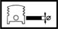

GUDGEON PIN
- Path
- Technical Data > Manufacturing data > 10 ENGINE > 1028 PISTONS AND CONNECTING RODS > GUDGEON PIN
- Kind
- technical data / specifications
- Applies to
- all engines; all production periods
- Interactive page
- https://sloeber94.github.io/elrnDB-aGt/en/#/2921835
Applies to: all engines; all production periods
Gudgeon pin outer diameter (mm) | Validity |  | ||
|---|---|---|---|---|
19.996 ÷ 20.000 | 2.0 JTS | |||
Outer diameter (mm) | Validity | |||
|---|---|---|---|---|
25.982 ÷ 25.987 | 1.9 JTD 16V | |||
Gudgeon pin outer diameter (mm) | Validity |  | ||
|---|---|---|---|---|
19.996 ÷ 22.000 | 3.2 V6 | |||